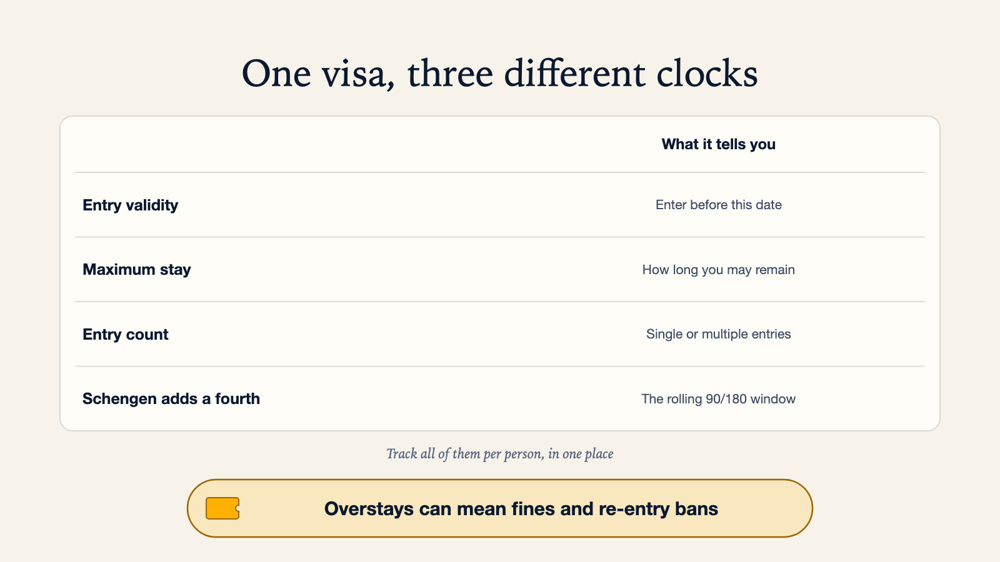

Visa Expiry Tracker App: What to Look For and Why It Matters
Travel Document Vault
Key Takeaways
- Visa expiry tracking is more complex than passport tracking - a visa has an entry validity date, a maximum stay duration, and sometimes entry count limits, all of which need separate monitoring.
- Overstaying a visa carries serious consequences: fines, re-entry bans of years or longer, and in some countries, criminal charges.
- The best visa expiry tracker apps work offline, support multiple visa types, and allow custom reminder timings per document.
- Schengen Area visitors must track a rolling 90/180-day window, not just a single expiry date, because the count rolls with your actual travel history, not the calendar.
- Tracking visas and passports together in one place reduces the risk of a mismatch: entering on a valid visa but with a passport that expires before your planned stay ends.
A visa overstay is one of the most consequential travel mistakes a person can make. Unlike a missed flight, which is stressful but ultimately fixable, an overstay creates a formal immigration record that can follow you for years. In the United States, under section 212(a)(9)(B) of the US Immigration and Nationality Act, someone who is unlawfully present for more than 180 days but less than a year and then leaves is generally barred from returning for three years, and one year or more of unlawful presence generally means a ten-year bar. These consequences are not widely known.
A visa expiry tracker app is built to prevent this: it needs to monitor multiple dates at once, entry validity, maximum stay, and entry count, each a separate deadline.
Why Visa Tracking Is More Complex Than Passport Tracking
A passport has one meaningful date: its expiry. A visa typically has several, and missing one of them is how an accidental overstay happens. If the difference between a visa and a passport is not yet clear, that explainer is worth reading first:
What this means in practice
A traveller enters a country on a visa stamped "valid until 30 June" with "30-day stay" printed below, and arrives on 20 June. The visa is valid for entry, but where the stay is counted from arrival they must leave by 20 July, not 30 June. Some countries instead require you to leave by the visa end date, so read the wording on yours. Confusing the two dates is one of the most common causes of accidental overstays.
| Field | What it means | Example |
|---|---|---|
| Entry validity date | The last date you can use this visa to enter the country | "Valid until 31 Dec 2026" - you must enter before this date |
| Maximum stay duration | How long you can remain once you enter, regardless of the visa validity date | "Duration of stay: 90 days" - clock starts on entry, not on visa issue |
| Number of entries | Single, double, or multiple entries allowed | A single-entry visa is generally used up the moment you exit, even if the entry validity date hasn't passed |
| Rolling window rules | Some visa regimes (notably Schengen) calculate permitted days within a rolling window | Schengen: maximum 90 days in any 180-day rolling window, not per calendar year |
A tracker that only monitors the entry validity date misses this exact trap: exceeding the maximum stay duration after a perfectly legal entry.
It's the field most travellers fail to track, because the date is not stamped anywhere in the passport, so you have to work it out from your own date of entry.

The Schengen 90/180-Day Rule
For travellers who visit multiple European countries, the Schengen Area's 90/180-day rule is one of the most widely misunderstood entry conditions in international travel. Citizens of countries with visa-free access to Schengen (including the UK, US, Canada, and Australia, among many others) may spend a maximum of 90 days in the Schengen Area within any 180-day rolling window.
The European Commission provides an official Schengen stay calculator to help travellers work out their allowed days, which matters because this is a rolling window, not a calendar-year reset. Days spent in Schengen six months ago still count against your current allowance, so checking a single expiry date will not catch an overstay. What matters is your actual entry and exit history, not the date printed on the visa.
Travel Document Vault tracks visa expiry separately from passport expiry, with its own reminders, because the two dates rarely match. Download on the App Store and Google Play.


What Happens When You Overstay
The consequences of a visa overstay vary by country but are consistently serious. Beyond the US bars described above:
- Australia: Overstaying your visa may result in restrictions on future visa applications and removal from the country. Overstay records are tracked and may affect future visa applications and re-entry eligibility.
- Schengen Area: Stays are recorded at the border, and an entry ban issued by one Schengen country is generally shared with the others through the Schengen Information System, so it applies across the Schengen area, which the European Commission currently lists as 29 countries.
- Thailand: Overstays incur a daily fine set by Thai immigration, up to a capped maximum, and an overstay of more than 90 days can lead to deportation and a ban on returning.
In all cases, the overstay record typically follows you: it appears in immigration databases checked at future border crossings and visa applications.
What to Look for in a Visa Expiry Tracker App
With all that complexity in mind, a good visa expiry tracker app needs to handle more than a simple date reminder. When you compare apps, look for:
- Separate fields for entry validity and maximum stay: These are different dates and need separate reminders.
- Entry count tracking: Single vs. double vs. multiple-entry matters for whether the visa survives an exit and re-entry.
- Offline access: You need your visa details at borders where internet may be unreliable.
- Custom reminder timings: A long-stay work visa might warrant a 90-day reminder; a tourist visa needs enough notice to arrange departure without rushing. One-size-fits-all reminders are not appropriate.
- Multiple document types and travellers: If you travel as a family, every family member's visa needs tracking independently.
- Privacy model: Visa details are identity-linked sensitive data. As with passport storage, on-device encryption with no cloud upload is the safest architecture.
- Passport + visa tracking together: A common but overlooked mistake is having a valid visa but a passport that expires during your planned stay. Having both tracked in the same place prevents this mismatch.
Practical Steps to Track Your Visa Properly
- Record your entry date the day you arrive. In most cases, your maximum stay clock starts on the day you enter, not from when the visa was issued or when the entry validity period began.
- Calculate and note your latest permitted exit date. Add your maximum stay duration to your entry date. This is the date you must leave by - earlier if you need time to reach a departure point.
- Track single vs. multiple entry status. If your visa is single-entry, leaving the country will generally use it up, so check whether a day trip is allowed before you cross a border.
- For Schengen travel, keep a log of entry and exit dates. Use the European Commission's official calculator to verify your remaining days before any trip that follows recent Schengen travel.
- Set a reminder well before your maximum stay deadline. This gives you time to arrange a departure without rushing, especially if transport options in your destination are limited.
Check your passport's expiry against your visa dates today: even a valid visa will not get you through if your passport expires too soon after your planned departure, which is exactly the mismatch our guide to the 6-month passport rule walks through.
Keep your own passport and visa dates on your phone, with reminders before they expire.
Before you rely on this: it's a blog, not an official source. Rules and details change, and your situation may be different. We check what we publish, and we can still be wrong or out of date. If something here matters to your plans, confirm it with the authority that handles it before you act.
Official sources
Frequently Asked Questions
What is a visa expiry tracker app?
A visa expiry tracker app monitors the expiry dates of your visas and sends reminders before they expire. The best ones track both the entry validity period and the maximum stay duration - two different deadlines that both matter for avoiding an overstay.
What is the difference between a visa expiry date and a maximum stay?
The visa expiry date is the last date you can use the visa to enter a country. The maximum stay is how long you can remain once you have entered. You can enter on a valid visa and still overstay if you remain beyond the maximum stay period. Both dates need to be tracked separately.
What happens if you overstay a visa?
Consequences vary by country but commonly include fines, re-entry bans, and deportation. In the US, more than 180 days of unlawful presence generally leads to a 3-year re-entry bar after you leave, and a year or more to a 10-year bar, under the Immigration and Nationality Act. Overstays are recorded in immigration databases and affect future visa applications.
Can a visa expiry tracker app work offline?
The best ones do. Offline access matters at borders and in areas with unreliable internet - exactly where you need your visa details most. Apps requiring internet to display your documents are less useful in these situations.
How far in advance should I get a reminder before my visa expires?
It depends on the visa type. For long-stay visas needing renewal, we'd set the reminder at 90 days, not closer. For tourist visas with fixed maximum stay durations, give yourself enough notice before your latest permitted exit date to arrange departure without rushing. Look for apps that let you set custom timings per document.